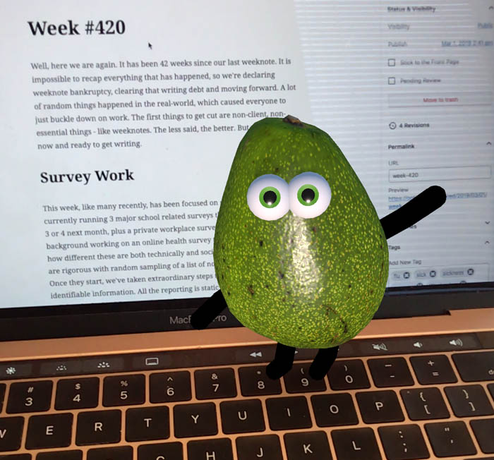

Well, here we are again. It has been 42 weeks since our last weeknote. It is impossible to recap everything that has happened, so we’re declaring weeknote bankruptcy, clearing that writing debt and moving forward. A lot of random things happened in the real-world, which caused everyone to just buckle down on work. The first things to get cut are non-client, non-essential things – like weeknotes. The less said, the better. But we are here now and ready to get writing.
Survey Work
This week, like many recently, has been focused on survey projects. We are currently running 3 major school related surveys this month, gearing-up for 3 or 4 next month, plus a private workplace survey all while in the background working on an online health survey too. It is amazing to see how different these are both technically and socially. The school surveys are rigorous with random sampling of a list of non-anonymous participants. Once they start, we’ve taken extraordinary steps to remove all personally identifiable information. All the reporting is static and scientifically validated. The health survey is just the opposite, it is an open and anonymous, self-selecting survey, which asks for lots of personal information. This data is put into live (cached) charts which are ever changing based on new participants.
The mechanics of the two are similar, it is forms on a webpage that get saved into a database. To the customer they are very similar, but technologically, we are jumping through a lot of different hoops in the backend to make them work the way they should.
These are ongoing projects that occupy most of our time. If that is all we talk about the next few weeks, you’ll know why.
Sickness Recovery
Most of the team have been sick in some way this last month. The weather, lack of sun, flu and other factors all have worn us down and broke us. It is finally getting sunny earlier (8:46) in the morning and staying light longer (18:35). All this has helped us get back into a routine and have the time to finally get back to things like weeknotes!
Bric-à-brac
Since we’re going back to the “writing gym” to work on our “writing muscles”, we’ll keep this short and leave you with a few interesting links.
These attempts to recreate an entire ensemble by yourself are always fun. When you watch it, you realise how much work everyone (or each instance of yourself) is doing individually to make it sound like a single group.

Avo! is a new genre of game. It has been explained as a “TV Game” and after downloading it, I understand why. It is all video based, but you can move the avocado around the scene and it cuts from place to place. It someways it feels very much like an early 90s CD-ROM game, but with a 21st Century twist. If you haven’t played it yet, it is very British and super interesting to see how this new genre will develop.